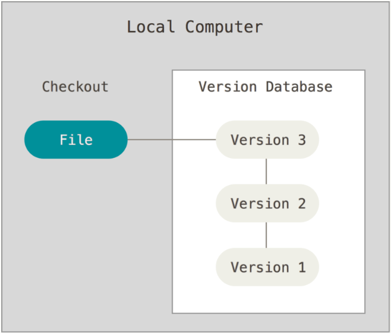
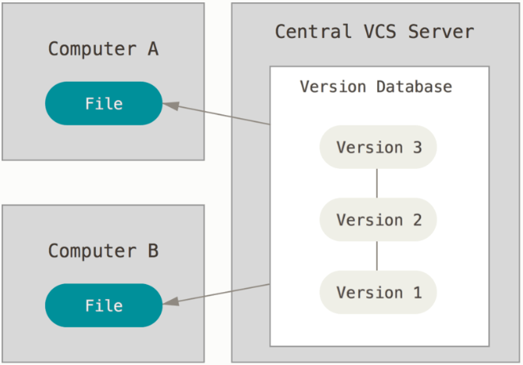
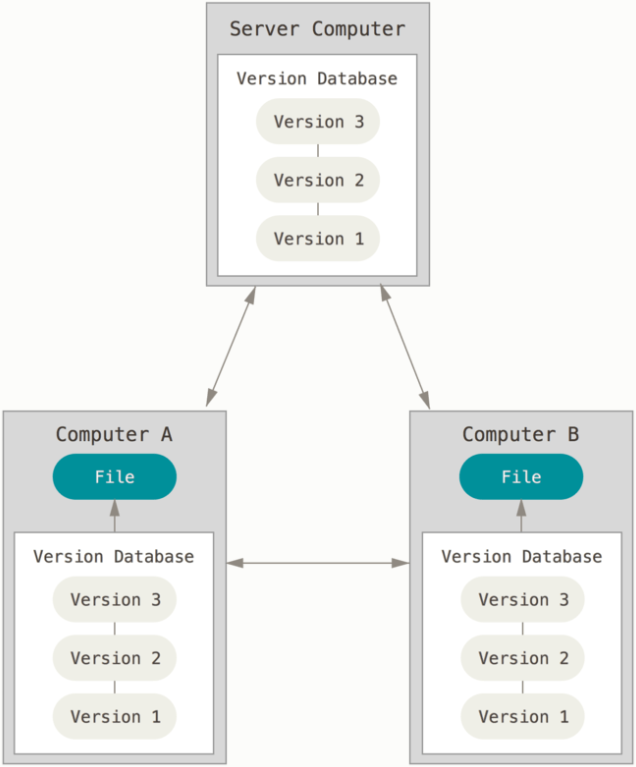
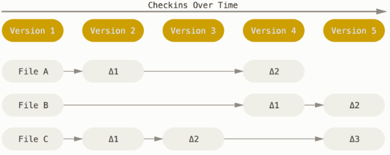
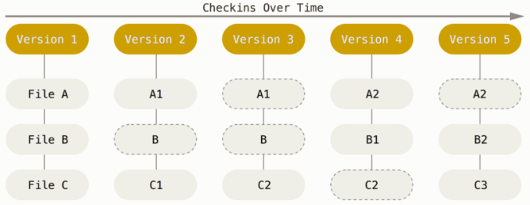
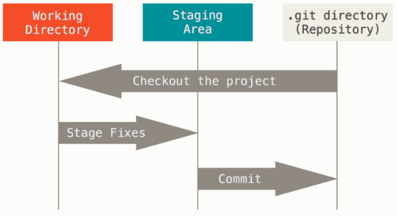

Introduction
關於版本控制
本地端版本控制
其中最流行的一種叫做 RCS，至今許多電腦上都還可以找到他的蹤影。 甚至在流行的 Mac OS X 系統中，只要安裝了開發者工具包以後，你就會有 rcs 的指令可以使用。 RCS 的工作原理是在硬碟上保存一堆特殊格式的補丁集合（patch set，即檔案從一個版本變更到另一個版本所需資訊）；通過套用任意的補丁，便可以重新產生出每個版本的檔案內容。

集中式版本控制系統
接下來人們又遇到了重大問題，就是如何和其他電腦上的開發者協同合作？ 為了解決這個問題，於是集中化的版本控制系統應運而生。
相對於本機版本控制系統，這種做法帶來了許多好處。 舉例來說，每個人都可以一定程度的知道專案中的其他人正在做些什麼。 管理員也可以輕鬆掌控每個開發者的權限。
然而，集中化的版本控制系統也有一些嚴重的缺點。 最嚴重的當然是中央伺服器如果發生故障的時候。 如果當機一小時，那麼這個小時之中，沒有人可以提交更新，也就無法協同合作。

分散式版本控制系統
於是分散式版本控制系統（Distributed Version Control Systems，簡稱 DCCSs）就此登上舞台。 在 DVCS 系統（如 Git、Mercurial、Bazaar 和 Darcs）中，用戶端並不只取出最新的檔案快照；還把整個倉儲做個鏡像。 假設有任何一個協同合作的伺服器故障，事後都可以用任何一個用戶端的鏡像來還原。 因為每個地方都有完整的資料備份。

Git 基礎要點
記錄檔案快照，而不是差異
Git 與其它版本控制系統（包含 Subversion 以及與它相關的）最主要的差別是如何處理資料的方式。 一般來說，其他大部分的系統是紀錄一連串檔案更改的資訊。 這些系統（CVS、Subversion、Perforce、Bazaar…等等）儲存一組基本的檔案以及這些檔案隨時間遞增的更動資料。

但是 Git 不是用這種方式儲存及看待這些資料， 而是將其視為小型檔案系統的一組快照（Snapshot）。 每當你提交（commit）（註：在 Git 儲存目前專案的狀態）時，Git 會紀錄下你所有目前檔案的樣子，並且參照到這次快照中。 為了講求效率，只要檔案沒有變更，Git 不會再度儲存該檔案，而是直接將上一次相同的檔案參照到這次快照中。 Git 把它的資料視為一連串的快照。

Git 能檢查完整性
在 Git 中所有的物件在儲存前都會被計算校驗碼（checksum）並以校驗碼參照物件。 這意味著你不可能瞞著 Git 對任何檔案或目錄進行修改。 此功能內建在 Git 底層並整合到它的設計哲學。 Git 更能夠馬上察覺傳輸時的遺失或是檔案的毀損。
Git 用來計算校驗碼的機制稱為 SHA-1 雜湊演算法。 一個校驗碼是由 40 個 16 進位的字母（0–9 和 a–f）所組成，Git 會根據檔案的內容和資料夾的結構來計算。 一個 SHA-1 校驗碼看起來如下所示：
24b9da6552252987aa493b52f8696cd6d3b00373
你會 Git 中到處都看到校驗碼，因為校驗碼被 Git 到處使用。 事實上在 Git 的資料庫內，每個檔案都是用其內容的校驗碼來儲存，而不是使用檔名。
Git 通常只增加資料
當你使用 Git，幾乎所有的動作都只是增加資料到Git的資料庫。 你很難藉此讓做出讓系統無法復原或者清除資料的動作。 在任何版本控制系統中，你尚未提交的修改都有可能會遺失或者搞亂。 但是只要你提交快照到 Git 後，很難會發生遺失的情況，特別是你定期將資料庫推送（push）到其它儲存庫時，就更不可能會弄丟資料。
三種狀態
Git 會把你的檔案標記為三種主要的狀態：已提交（committed）、已修改（modified）及已預存（staged）。 已提交代表這檔案己安全地存在你的本地端資料庫。 己修改代表這檔案已被修改但尚未提交到本地端資料庫。 已預存代表這檔案將會被存到下次你提交的快照中。
這帶領我們到 Git 專案的三個主要區域：Git 資料夾（.git directory）、工作目錄（working directory）以及預存區（staging area）。

Git 資料夾（.git directory）是 Git 用來儲存你專案的後設資料及物件資料庫的地方。 這是 Git 最重要的部份，而且當你克隆一個其他電腦的儲存庫時，這個資料夾也會被同時複製。
工作目錄（working directory）是專案被檢出的某一個版本。 這些檔案從 Git 資料夾內被壓縮過的資料庫中拉出來並放在硬碟供你使用或修改。
預存區（staging area）是一個單一檔案，一般來說放在 Git 資料夾下，儲存關於下次提交的資訊。 有時它會稱為索引「index」，但現在更常被稱呼為預存區。
基本 Git 工作流程大致如下：
- 你在你工作目錄修改檔案。
- 預存檔案，將檔案的快照新增到預存區。
- 做提交的動作，這會讓存在預存區的檔案快照永久地儲存在 Git 資料夾中。
若檔案已被存於 Git 資料夾內，則稱為已提交。 若檔案先被修改，接著被增加到預存區域，則稱為已預存。 若檔案被檢出後有被修改，但未被預存，則稱為已修改。